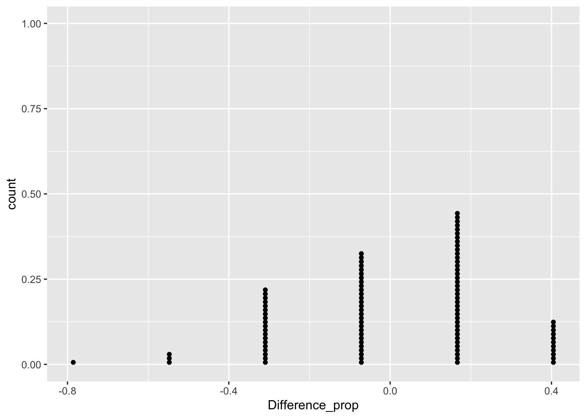

Malaria vaccine Example.
The data shows effectiveness of malaria vaccine named PfSPZ.
In the study, volunteer participants were randomly assigned to one of two groups: 14 individuals received the experimental vaccine, while 6 received a placebo. Nineteen weeks later, all 20 participants were deliberately exposed to a drug-sensitive strain of the malaria virus. The decision to use a drug-sensitive strain was driven by ethical reasons, ensuring that any resulting infections could be effectively treated. The table below shows that 9 out of the 14 patients who received the treatment did not display any signs of infection, whereas all 6 patients in the control group showed some initial symptoms of infection.
Infection no infection Total
vaccine 5 9 14
placebo 6 0 6
Total 11 9 20Based on the data, 5/14 = 35.7% of the patients who
received the vaccine showed signs of infection, while
6/6 = 100% of the patients who received a placebo exhibited
signs of infection.
\(H_0\) : Independence model. The variables treatment and outcome are independent. They have no relationship, and the observed difference between the proportion of patients who developed an infection in the two groups, 64.3%, was due to chance.
\(H_a\) : Alternative model. The variables are not independent. The difference in infection rates of 64.3% was not due to chance, and vaccine affected the rate of infection.
We take 11 “Infection” and 9 “no infection” as the total data.
data <- c(rep("Infection", 11), rep("no infection", 9))
data## [1] "Infection" "Infection" "Infection" "Infection" "Infection"
## [6] "Infection" "Infection" "Infection" "Infection" "Infection"
## [11] "Infection" "no infection" "no infection" "no infection" "no infection"
## [16] "no infection" "no infection" "no infection" "no infection" "no infection"Randomly take 6 of them as “placebo” and 14 of them as “vaccine”.
index <- sample(1:length(data), 6) # this is where we allocate patients regardless of cause of deaths (that means it is under the null hypothesis model)
placebo <- data[index]
vaccine <- data[-index]
placebo## [1] "no infection" "no infection" "Infection" "Infection" "Infection"
## [6] "no infection"vaccine## [1] "Infection" "Infection" "Infection" "Infection" "Infection"
## [6] "Infection" "Infection" "Infection" "no infection" "no infection"
## [11] "no infection" "no infection" "no infection" "no infection"Getting the simulated contingency table
group <- c(rep("placebo", length(placebo)), rep("vaccine", length(vaccine)))
outcome <- c(placebo, vaccine)
df <- data.frame(Group = group, Outcome = outcome)
df_table <- table(df)
df_table## Outcome
## Group Infection no infection
## placebo 3 3
## vaccine 8 6Get the ratio difference
ratio1 = df_table[3] / 6
ratio2 = df_table[4] / 14
ratio2-ratio1## [1] -0.07142857Simulate them 100 times
sim_function<-function(){
index <- sample(1:20, 6)
placebo <- data[index]
vaccine <- data[-index]
group <- c(rep("placebo", length(placebo)), rep("vaccine", length(vaccine)))
outcome <- c(placebo, vaccine)
df <- data.frame(Group = group, Outcome = outcome)
df_table <- table(df)
ratio1 = df_table[3] / 6
ratio2 = df_table[4] / 14
out <- ratio2-ratio1
return(out)
}
sim_function()## [1] 0.1666667library(ggplot2)
rates <- rep(0,100)
for (i in 1:100){
rates[i] <- sim_function()
}
sim_df <- data.frame(Difference_prop=rates)
ggplot(data=sim_df, aes(x=Difference_prop)) + geom_dotplot(binwidth=1/100)
Based on the simulation result, we conclude the evidence is statistically significant to reject \(H_0\) and conclude that the vaccine was useful.